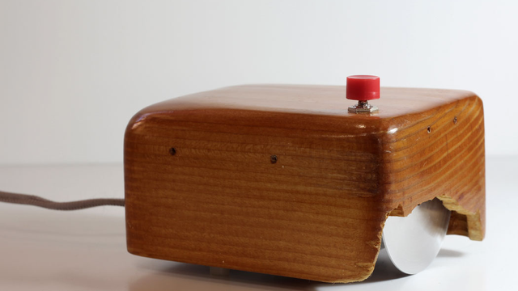
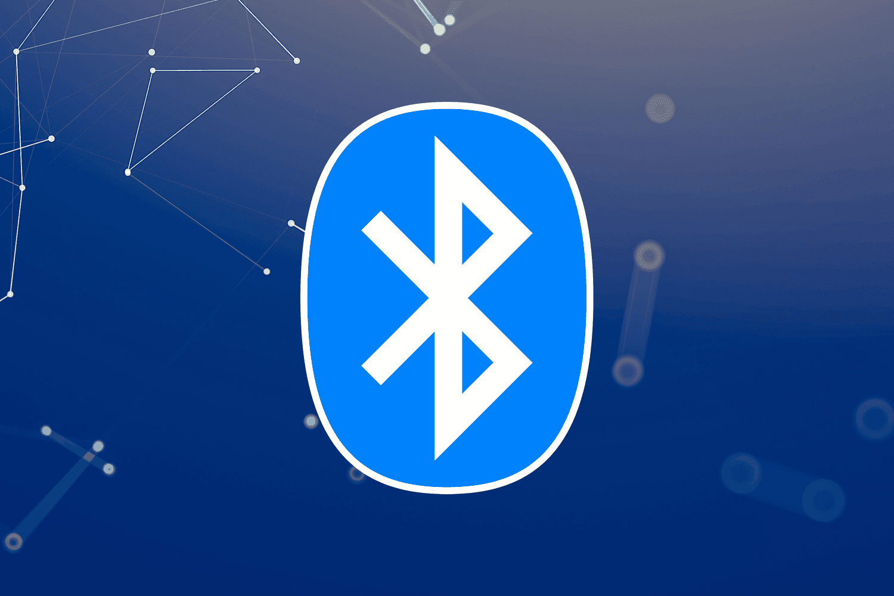

Meu primeiro post
Por: Manuela do Nascimento Romito
Boas-vindas ao meu novo blog! Aqui vou compartilhar dicas de programação e curiosidades da área de tecnologia.
Vou compartilhar conhecimentos sobre tecnologia e programação
Por: Manuela do Nascimento Romito
Boas-vindas ao meu novo blog! Aqui vou compartilhar dicas de programação e curiosidades da área de tecnologia.
Por: Manuela do Nascimento Romito
Estima-se que 90% de todos os dados existentes no mundo hoje foram gerados apenas nos últimos dois anos. Vivemos em uma verdadeira explosão de informação que não para de acelerar.

Por: Manuela do Nascimento Romito
Antes do desing ergonômico e das luzes RGB, o primeiro mouse do mundo foi construido em madeira! Criado por Douglas Engelbart em 1964, ele tinha o formato de uma caixa quadrada e apenas um botão.

Por: Manuela do Nascimento Romito
O nome Bluetooh é uma homenagem ao rei viking Harald "Blátand" Gormssom (Harald Dente-Azul), que governou a Dinamarca e a Noruega no século X.
Por: Manuela do Nascimento Romito
Apesar de Alan Turing ser reconhecido como pai da computação, ele não criou o primeiro computador. Entre os primeiros computadores, um deles foi chamado Colossus,
projetado por Tonny Flowers durante a Segunda Guerra Mundial e também, praticamente na mesma época, o ENIAC foi projetado por J.Presper Eckert e Jhon Mauchly.
Embora o Colosus tenha funcionado antes como um "herói de guerra" especializado. O ENIAC é frequentemente chamado de "pai" por ser o primeiro programável de uso geral.
E aí, qual você considera como o primeiro computador?
The National Museum of Computing